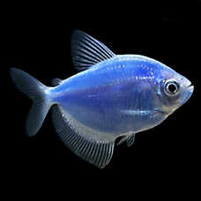
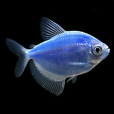

Fish Food

Top Fin© Algae Thins Fish Food.
In addition to many types of Top Fin© products, we offer many of the leading brands of fish food on the market today, including Omega One©, Tetra© and Aqueon©.
Live Fish
 

Angelfish and a Cosmic Blue GloFish
We also sell many other varieties of "live" aquarium fish, including goldfish, minnows, guppies, rainbow sharks, snails and crabs to name a few, in various shapes and colors.
Fish Accessories
Top Fin© Essentials Aquarium Starter Kit
We offer many varieties of aquariums, stands, fish bowls and other accessories offered by Top Fin©, Aqueon©, Clear-For-Life© and others.